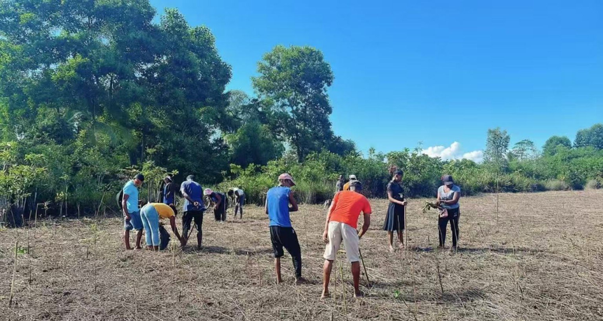
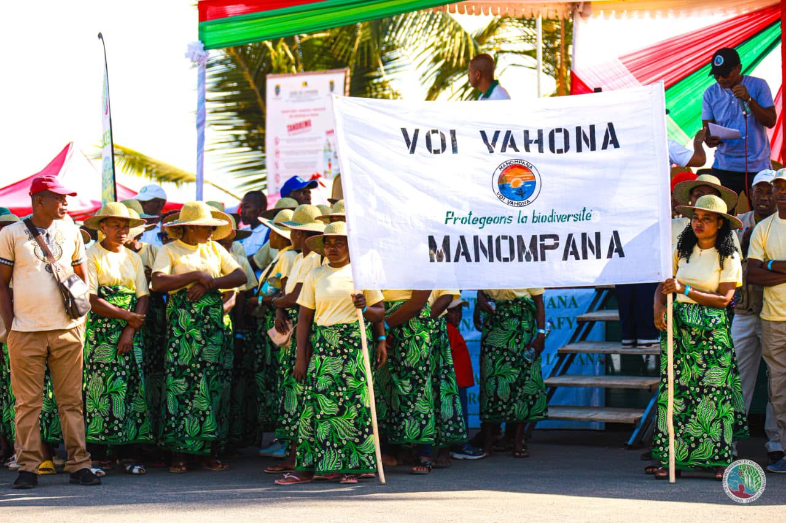
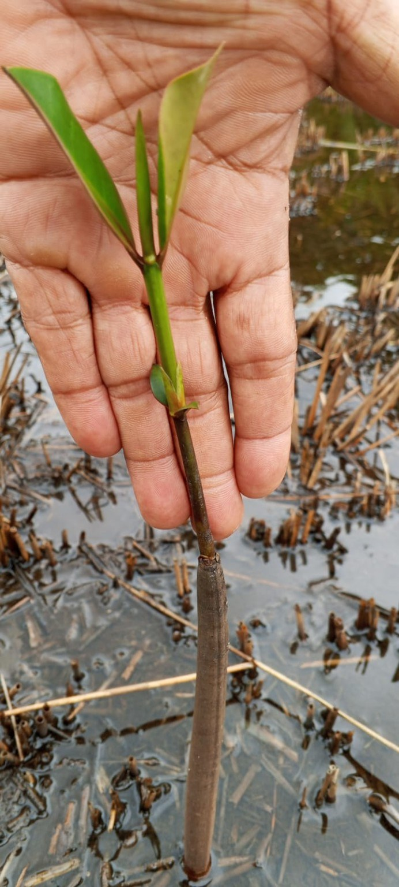
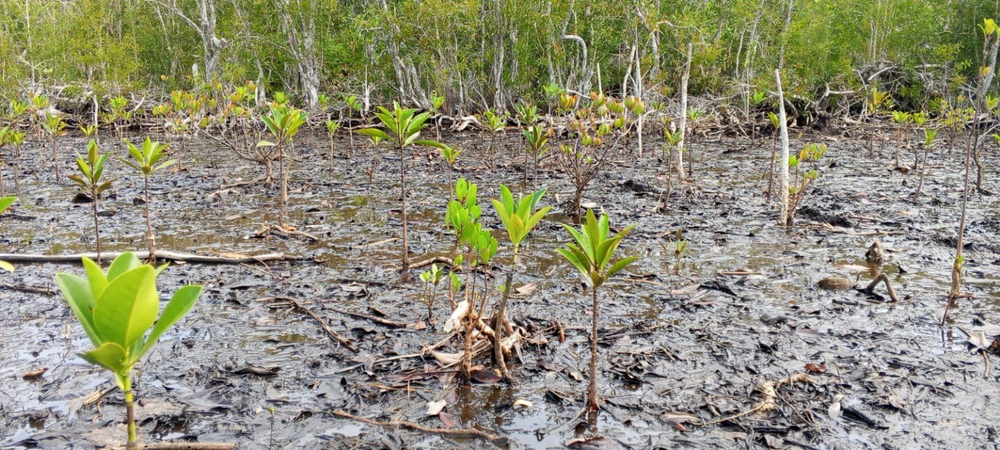
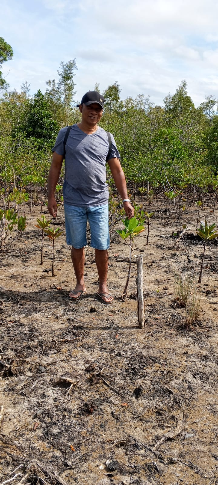
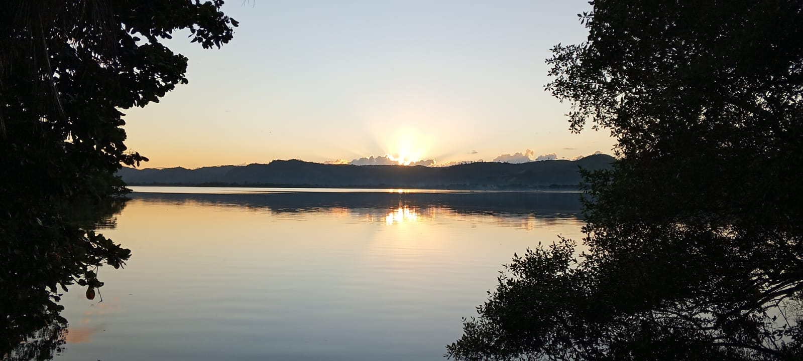
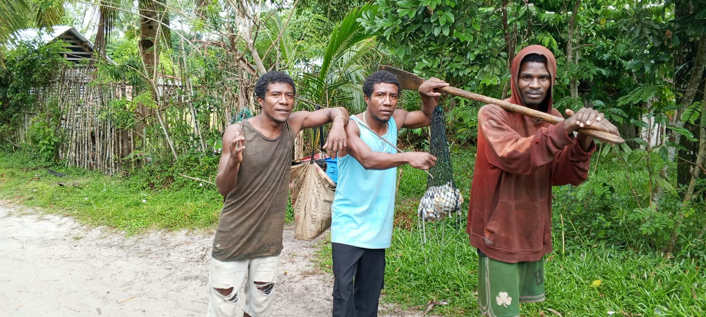
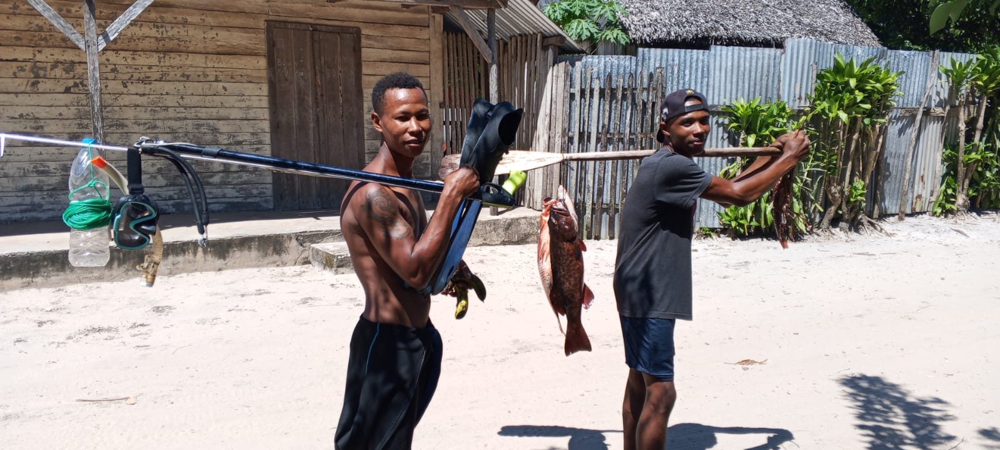
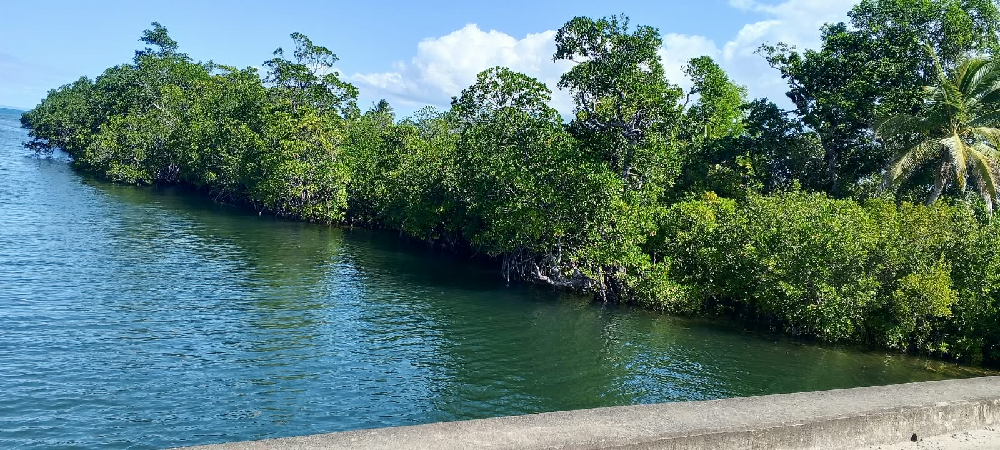

Protéger la nature,
préserver notre avenir.
Une communauté engagée pour la protection des mangroves et la valorisation des richesses naturelles de Manompana.
Découvrir l'association →Un patrimoine naturel,
un avenir commun.
Voi Vahona Manompana est une association communautaire locale engagée dans la gestion durable et la protection des mangroves, ainsi que des ressources naturelles terrestres et aquatiques de Manompana.
À travers des actions concrètes et la mobilisation locale, l'association contribue à préserver cet environnement précieux pour les générations futures.

Agir sur le terrainPlanter aujourd'hui,
restaurer pour demain.
Voi Vahona Manompana mène des activités de plantation et de restauration des mangroves sur plusieurs sites, avec l'appui de partenaires et la coopération des acteurs locaux.
Rhizophora mucronata · Bruguiera gymnorhiza · Avicennia marina
Des résultats
concrets et collectifs.
Les plantations ont été réalisées de février à avril 2026, puis les activités de restauration se sont poursuivies d'avril à juillet 2026. Ces actions ont bénéficié, selon les projets, de l'appui de partenaires tels que la DREED, Sino Hydro et AFAFI-Nord, avec la coopération de la commune et du chef de triage.
La préservation de la nature se construit ensemble.
Les membres et les communautés locales sont au cœur des actions menées pour préserver les mangroves et les ressources naturelles de Manompana.

Faire grandir la vie.
Des jeunes plants aux zones restaurées, chaque étape compte pour contribuer au renouvellement des écosystèmes.


Manompana, naturellement.
La mangrove, la baie et les activités locales : un patrimoine vivant à préserver.




